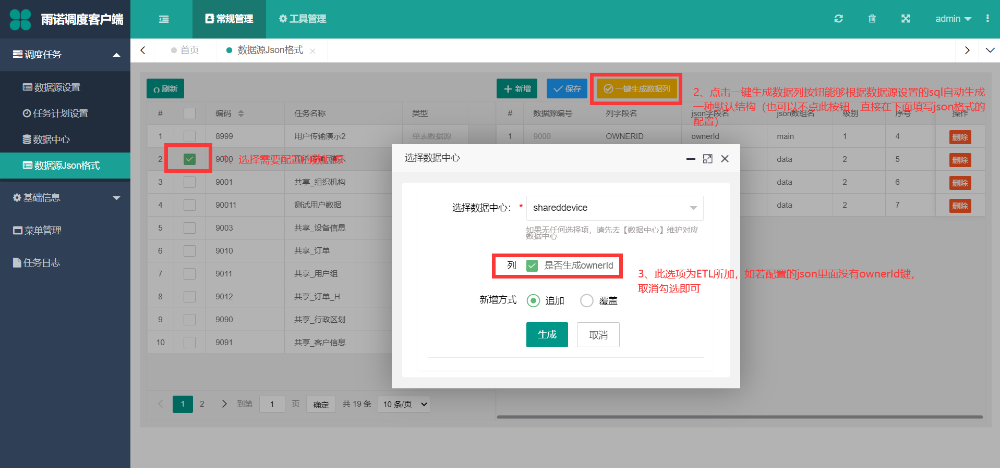

数据源JSON格式设置¶
本模块主要功能是提供可配置 数据源设置 中主数据源和明细数据源的 数据转化JSON 的转化扩展功能，如若想要在插件内自己转化，此转化设置不配置即可。
给根据需求配置完后，可在插件内通过 AdminWeb.Core.Common.BaseConvert.DataColumnRelationToJson.GetArrayJson(..) 静态方法转化已配置好的 JSON
注解
由于空数据源只用来调度插件，没有配置任何 SQL 语句，所以，只有 数据源设置 使用单表数据源和多表数据源模式，此模块才可以使用，否则配置无效。
JSON格式配置¶
注解
选择数据中心：根据哪个数据中心来生成列字段
是否生成ownerId ：该信息项为 ETL 提供，自定义的插件不需要选择此选项。
数据源编号：与左侧的数据源设置中的数据源的编号保持一致列字段名：数据源设置中定义的SQL的列名Captionjson字段名：转化后的json键json数组名：数组值对应的键级别：层级，最多支持两级序号：排序，json各个键的排序
单表数据源设置¶

生成的单表数据源的JSON结构如下所示：
{
"ownerId": "888",
"data": [{
"userid": "1",
"username": "小明",
"usersex": "男"
}, {
"userid": "2",
"username": "小红",
"usersex": "女"
}],
"time": "2021-02-23 14:29:40"
}
time ：是否带有时间戳可通过控制 AdminWeb.Core.Common.BaseConvert.DataColumnRelationToJson.GetArrayJson(..) 的参数的 isTimestamp 参数来控制
多表数据源设置¶
生成的多表数据源的JSON结构如下所示：
{
"ownerId": "2901",
"data": [{
"GUID": "a5c14242-d8a7-43a1-9452-7a2d0a213939",
"billNo": "DD202102200001",
"billDate": "2021-02-20",
"billType": "PI",
"supplierCode": "SY03281",
"usefuldate": "2021-03-22",
"cgy": "29010006",
"items": [{
"lineId": "1",
"materielCode": "111872",
"stockState": "01",
"quantity": "200",
"batchNo": null,
"effectiveDate": null,
"productDate": null,
"packageQuantity": "1200"
}, {
"lineId": "2",
"materielCode": "1016438",
"stockState": "01",
"quantity": "50",
"batchNo": null,
"effectiveDate": null,
"productDate": null,
"packageQuantity": "0"
}]
}]
}],
"time": "2021-02-20 08:43:15"
}
插件内转化JSON¶
using System;
namespace JobDemo
{
//多表数据源的插件
public class Job : IMyMultiJob
{
private static readonly LogHelper _logHelper = new LogHelper();//日志组件
public async Task<Tuple<bool, string>> ExecuteJob(JobPara jobpara, List<DataSet> dss)
{
_logHelper.Debug(jobpara, "调用主任务：{jobpara.JobId}.{jobpara.JobName}，子任务：{jobpara.JobDetailId}.{jobpara.JobDetailName}");
string guid = jobpara.JobDetailId;
string key = string.Empty;
string jsonErrorMsg = string.Empty
try
{
DataTable dt = ds.Tables["Head"];
string resultJson = string.Empty;
#region 单表
//转化成json
//guid：填写jobpara.JobDetailId即可
//dt：单表数据
//key：按键分组，无需分组使用传空字符串即可
//jsonErrorMsg：错误信息
resultJson = DataColumnRelationToJson.GetJson(guid, dt, key, ref jsonErrorMsg, isTimestamp: false);
#endregion
#region 多表
DataSet dataset = new DataSet();
for(int i=0;i < dss.Count();i++)
{
DataTable itemsDt = dss[i].Tables["Detail1"].Copy();
itemsDt.TableName = "items";
dt.TableName = "data";
dataset.Tables.Add(dt.Copy());
dataset.Tables.Add(itemsDt);
//目前只支持每次只能转一笔主数据的json，如果想要汇总起来，需要自己在转化一下
resultJson = DataColumnRelationToJson.GetArrayJson(guid, dt, dataset, ref jsonErrorMsg, isTimestamp: true);
}
#endregion
if (jsonErrorMsg.Length == 0)//转化成功
{
Console.WriteLine(resultJson);//输出转化后的json
}
else
{
return new Tuple<bool, string>(false, jsonErrorMsg);
}
return new Tuple<bool, string>(true, "");
}
catch (Exception ex)
{
_logHelper.Error(jobpara, "调用主任务：{jobpara.JobId}.{jobpara.JobName}，子任务：{jobpara.JobDetailId}.{jobpara.JobDetailName}执行失败，失败信息{ex.Message}");
return new Tuple<bool, string>(false, ex.Message);
}
}
}
}